Ornamental
What the plant does, from the tags the catalogue records against it.
154 plants
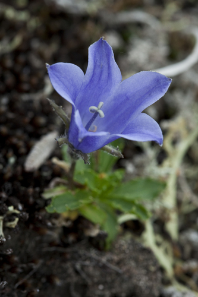
Alaska HarebellCampanula lasiocarpa Alberta PenstemonPenstemon albertinusAlder-leaved BuckthornEndotropis alnifolia
Alberta PenstemonPenstemon albertinusAlder-leaved BuckthornEndotropis alnifolia Thomas Koffel, some rights reserved (CC BY), uploaded by Thomas Koffel") Alpine AsterAster alpinus
Alpine AsterAster alpinus Caleb Catto, some rights reserved (CC BY), uploaded by Caleb Catto") Alpine Forget-me-notMyosotis asiatica
Alpine Forget-me-notMyosotis asiatica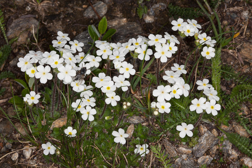
Alpine Rock JasmineAndrosace chamaejasmeArctic AsterEurybia sibirica Ball CactusEscobaria vivipara
Ball CactusEscobaria vivipara Leslie Seaton, some rights reserved (CC BY)") BalsamrootBalsamorhiza sagittataBig BluestemAndropogon gerardi
BalsamrootBalsamorhiza sagittataBig BluestemAndropogon gerardi Matt Lavin, some rights reserved (CC BY)") Big SagebrushArtemisia tridentata
Big SagebrushArtemisia tridentata Eugene Popov, some rights reserved (CC BY), uploaded by Eugene Popov") Birch-leaved SpireaSpiraea betulifolia
Birch-leaved SpireaSpiraea betulifolia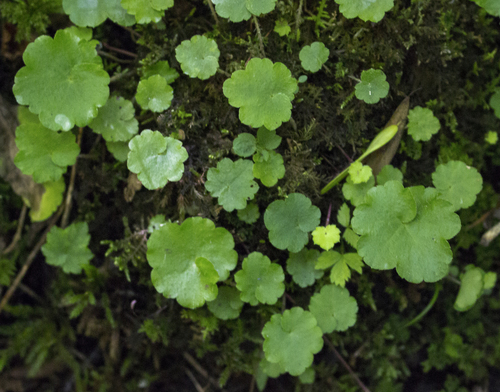
Bishop's CapMitella nudaBlue ClematisClematis occidentalis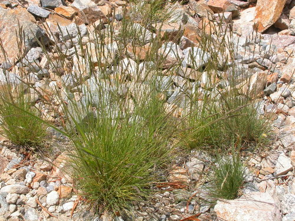
Bluebunch FescueFestuca idahoensis Boreal YarrowAchillea borealis
Boreal YarrowAchillea borealis Boreale OxytropisOxytropis borealis
Boreale OxytropisOxytropis borealis Nolan Exe, some rights reserved (CC BY), uploaded by Nolan Exe") Brittle Prickly-pearOpuntia fragilis
Brittle Prickly-pearOpuntia fragilis Bronze BellsAnticlea occidentalis
Bronze BellsAnticlea occidentalis W. Terry Hunefeld, some rights reserved (CC BY), uploaded by W. Terry Hunefeld") BroomweedGutierrezia sarothraeButte PrimroseOenothera cespitosa subsp. cespitosa
BroomweedGutierrezia sarothraeButte PrimroseOenothera cespitosa subsp. cespitosa Dendroica cerulea, some rights reserved (CC BY)") Canada AnemoneAnemonastrum canadenseCanada Rice GrassPiptatherum canadenseCommon Scouring-rushEquisetum hyemale
Canada AnemoneAnemonastrum canadenseCanada Rice GrassPiptatherum canadenseCommon Scouring-rushEquisetum hyemale Matt Lavin, some rights reserved (CC BY)") Common TwinpodPhysaria didymocarpaCreeping Oregon GrapeMahonia repens
Common TwinpodPhysaria didymocarpaCreeping Oregon GrapeMahonia repens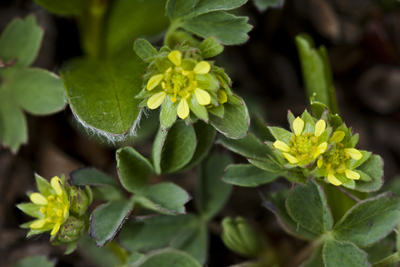
Creeping SibbaldiaSibbaldia procumbens Joshua Mayer, some rights reserved (CC BY-SA)") Crowfoot VioletViola pedatifida
Crowfoot VioletViola pedatifida Caleb Catto, some rights reserved (CC BY), uploaded by Caleb Catto") Cushion Umbrella PlantEriogonum androsaceum
Cushion Umbrella PlantEriogonum androsaceum James H. Thomas, some rights reserved (CC BY), uploaded by James H. Thomas") Desert Shooting StarPrimula conjugens
Desert Shooting StarPrimula conjugens Caleb Catto, some rights reserved (CC BY), uploaded by Caleb Catto") Douglas MapleAcer glabrum
Douglas MapleAcer glabrum Dustin Snider, some rights reserved (CC BY), uploaded by Dustin Snider") Dwarf BirchBetula glandulosaEarly Yellow OxytropisOxytropis sericea
Dwarf BirchBetula glandulosaEarly Yellow OxytropisOxytropis sericea Nick Block, some rights reserved (CC BY), uploaded by Nick Block") Eastern Red ColumbineAquilegia canadensisElegant GoldenrodSolidago lepidaFalse DragonheadPhysostegia ledinghamii
Eastern Red ColumbineAquilegia canadensisElegant GoldenrodSolidago lepidaFalse DragonheadPhysostegia ledinghamii Don Loarie, some rights reserved (CC BY), uploaded by Don Loarie") False Solomon's SealMaianthemum amplexicaule
False Solomon's SealMaianthemum amplexicaule Alexis Williams, some rights reserved (CC BY), uploaded by Alexis Williams") Field PussytoesAntennaria neglecta
Field PussytoesAntennaria neglecta Douglas Goldman, some rights reserved (CC BY-SA), uploaded by Douglas Goldman") Flat-topped GoldenrodEuthamia graminifolia
Flat-topped GoldenrodEuthamia graminifolia Rob Foster, some rights reserved (CC BY), uploaded by Rob Foster") Floating Marsh-marigoldCaltha natans
Floating Marsh-marigoldCaltha natans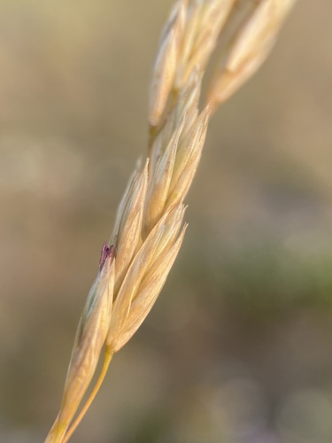
Foothills Rough FescueFestuca campestris Catherine C. Galley, some rights reserved (CC BY), uploaded by Catherine C. Galley") Fragrant SumacRhus aromatica
Fragrant SumacRhus aromatica er-birds, some rights reserved (CC BY), uploaded by er-birds") Fringed LoosestrifeLysimachia ciliataFuzzy-tongue PenstemonPenstemon eriantherusGlacier LilyErythronium grandiflorum
Fringed LoosestrifeLysimachia ciliataFuzzy-tongue PenstemonPenstemon eriantherusGlacier LilyErythronium grandiflorum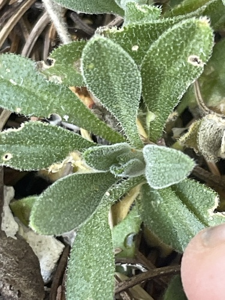
Golden DrabaDraba aurea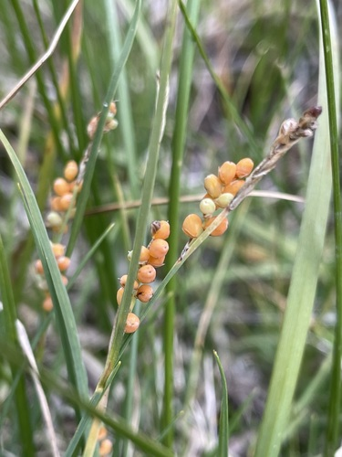
Golden SedgeCarex aurea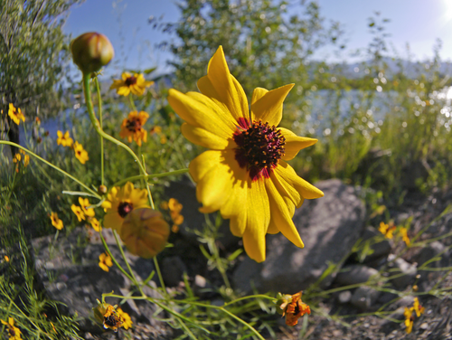
Golden TickseedCoreopsis tinctoria Mary Krieger, some rights reserved (CC BY), uploaded by Mary Krieger") Green MilkweedAsclepias ovalifoliaGumweedGrindelia squarrosa
Green MilkweedAsclepias ovalifoliaGumweedGrindelia squarrosa Jim Morefield, some rights reserved (CC BY)") Hairy ArnicaArnica mollis
Hairy ArnicaArnica mollis Matt Lavin, some rights reserved (CC BY-SA)") Hairy Golden AsterHeterotheca villosaHarebellCampanula alaskanaHeart-leaved ArnicaArnica cordifolia
Hairy Golden AsterHeterotheca villosaHarebellCampanula alaskanaHeart-leaved ArnicaArnica cordifolia Tom Norton, some rights reserved (CC BY), uploaded by Tom Norton") Highbush CranberryViburnum opulus
Highbush CranberryViburnum opulus Matt Lavin, some rights reserved (CC BY)") Hoary AsterDieteria canescensHooker's Oat GrassAvenula hookeri
Hoary AsterDieteria canescensHooker's Oat GrassAvenula hookeri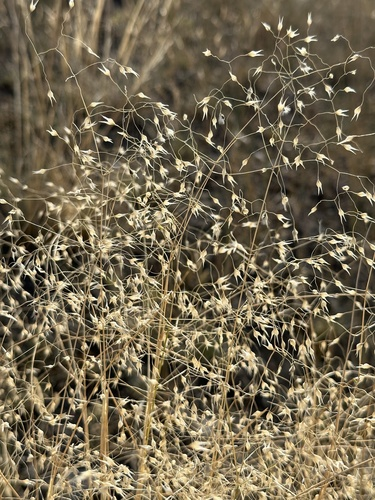
Indigenous RicegrassEriocoma hymenoides Douglas Goldman, some rights reserved (CC BY-SA), uploaded by Douglas Goldman") Jack PinePinus banksianaLabrador TeaLedum groenlandicum
Jack PinePinus banksianaLabrador TeaLedum groenlandicum Andreas Stiller, some rights reserved (CC BY), uploaded by Andreas Stiller") Late GoldenrodSolidago giganteaLate Yellow OxytropisOxytropis monticola
Late GoldenrodSolidago giganteaLate Yellow OxytropisOxytropis monticola Andrey Zharkikh, some rights reserved (CC BY)") Leafy AsterSymphyotrichum foliaceum
Leafy AsterSymphyotrichum foliaceum Colin Meurk, some rights reserved (CC BY-SA), uploaded by Colin Meurk") Little BluestemSchizachyrium scoparium
Little BluestemSchizachyrium scoparium Steve Matson, some rights reserved (CC BY), uploaded by Steve Matson") Little-leaved AlumrootHeuchera parvifolia
Little-leaved AlumrootHeuchera parvifolia Alison Northup, some rights reserved (CC BY), uploaded by Alison Northup") Lodgepole PinePinus contorta
Lodgepole PinePinus contorta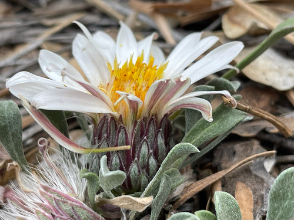
Low TownsendiaTownsendia exscapaLyalls PenstemonPenstemon lyallii davecz2, some rights reserved (CC BY-SA)") Marsh AsterSymphyotrichum borealeMarsh VioletViola palustris
Marsh AsterSymphyotrichum borealeMarsh VioletViola palustris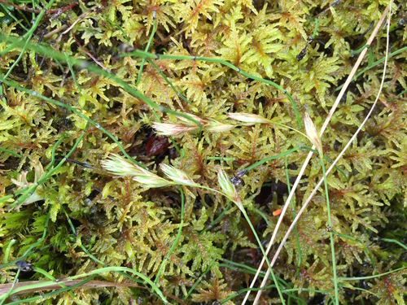
Meadow SedgeCarex praticola Katrin Simon, some rights reserved (CC BY), uploaded by Katrin Simon") Moss CampionSilene acaulisMoss PhloxPhlox hoodii
Moss CampionSilene acaulisMoss PhloxPhlox hoodii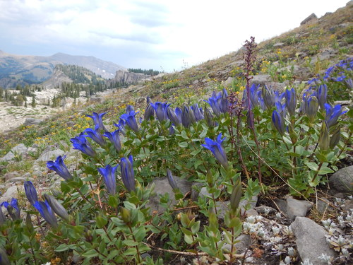
Mountain GentianGentiana calycosaMountain HollyhockIliamna rivularisNarrow-leaved HawkweedHieracium umbellatumNarrowleaf Cotton-grassEriophorum angustifolium Trevor Van Loon, some rights reserved (CC BY), uploaded by Trevor Van Loon") Needle and Thread GrassHesperostipa comata
Needle and Thread GrassHesperostipa comata Tom Norton, some rights reserved (CC BY), uploaded by Tom Norton") Ostrich FernMatteuccia struthiopteris
Ostrich FernMatteuccia struthiopteris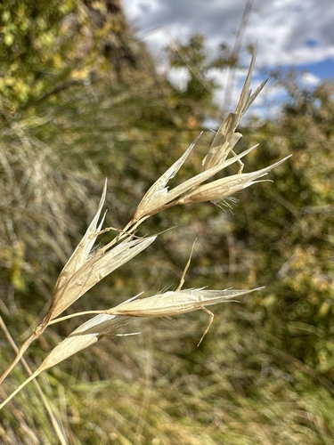
Parry's OatgrassDanthonia parryiParry's TownsendiaTownsendia parryiPink CorydalisCapnoides sempervirens Bob Walker, some rights reserved (CC BY), uploaded by Bob Walker") Pink Monkey FlowerErythranthe lewisii
Pink Monkey FlowerErythranthe lewisii Matt Berger, some rights reserved (CC BY), uploaded by Matt Berger") Plains MuhlyMuhlenbergia cuspidata
Plains MuhlyMuhlenbergia cuspidata Andrey Zharkikh, some rights reserved (CC BY)") Plains Prickly Pear CactusOpuntia polyacantha
Plains Prickly Pear CactusOpuntia polyacantha Matt Lavin, some rights reserved (CC BY-SA)") Plains WormwoodArtemisia campestris
Plains WormwoodArtemisia campestris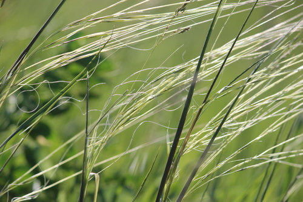
Porcupine GrassHesperostipa spartea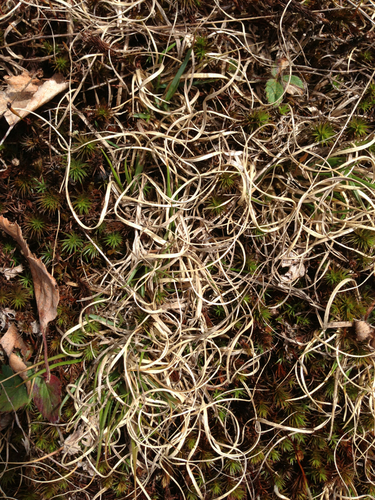
Poverty Oat GrassDanthonia spicata Matt Lavin, some rights reserved (CC BY-SA)") Prairie CinquefoilPotentilla pensylvanicaPrairie Cord GrassSpartina pectinata
Prairie CinquefoilPotentilla pensylvanicaPrairie Cord GrassSpartina pectinata Syd Cannings, some rights reserved (CC BY), uploaded by Syd Cannings") Prairie CrocusPulsatilla nuttalliana
Prairie CrocusPulsatilla nuttalliana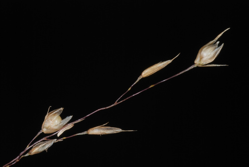
Prairie DropseedSporobolus heterolepis Cesar Ormazabal, some rights reserved (CC BY), uploaded by Cesar Ormazabal") Prairie GentianGentiana affinisPrairie GoldenrodSolidago missouriensisPrairie ThistleCirsium flodmaniiPurple Oat GrassSchizachne purpurascensPurple Reed GrassCalamagrostis purpurascens
Prairie GentianGentiana affinisPrairie GoldenrodSolidago missouriensisPrairie ThistleCirsium flodmaniiPurple Oat GrassSchizachne purpurascensPurple Reed GrassCalamagrostis purpurascens Matt Lavin, some rights reserved (CC BY-SA)") RabbitbrushEricameria nauseosaRaymond's SedgeCarex raymondii
RabbitbrushEricameria nauseosaRaymond's SedgeCarex raymondii Brian Finzel, some rights reserved (CC BY-SA), uploaded by Brian Finzel") Red BaneberryActaea rubra
Red BaneberryActaea rubra Alan Rockefeller, some rights reserved (CC BY), uploaded by Alan Rockefeller") Red ColumbineAquilegia formosaRocky Mountain BeeplantPeritoma serrulata
Red ColumbineAquilegia formosaRocky Mountain BeeplantPeritoma serrulata marek, some rights reserved (CC BY), uploaded by marek") Rocky-Ledge BeardtonguePenstemon ellipticus
Rocky-Ledge BeardtonguePenstemon ellipticus RoserootRhodiola integrifoliaRound-leaved Yellow VioletViola orbiculata
RoserootRhodiola integrifoliaRound-leaved Yellow VioletViola orbiculata Saline Shooting StarPrimula paucifloraSand GrassCalamovilfa longifolia
Saline Shooting StarPrimula paucifloraSand GrassCalamovilfa longifolia Stan Shebs, some rights reserved (CC BY-SA)") Scarlet Butterfly PlantOenothera suffrutescensScarlet GlobemallowSphaeralcea coccineaScorpion WeedPhacelia sericea
Scarlet Butterfly PlantOenothera suffrutescensScarlet GlobemallowSphaeralcea coccineaScorpion WeedPhacelia sericea JerryFriedman, some rights reserved (CC BY-SA)") Showy Jacob's-ladderPolemonium pulcherrimum
Showy Jacob's-ladderPolemonium pulcherrimum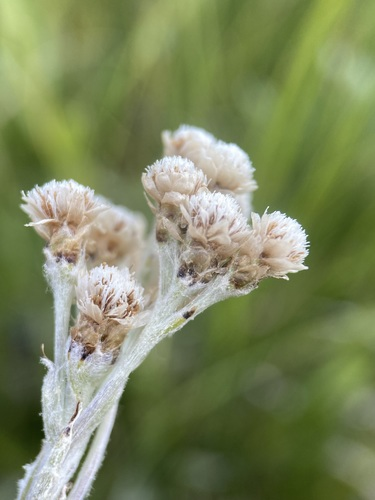
Showy PussytoesAntennaria pulcherrima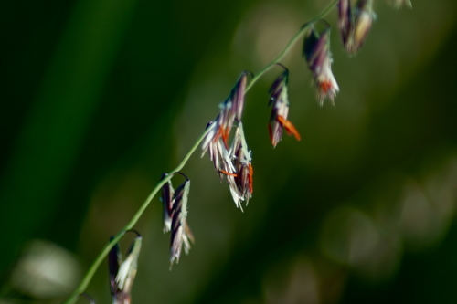
Sideoats GramaBouteloua curtipendula David Anderson, some rights reserved (CC BY), uploaded by David Anderson") Silky LupineLupinus sericeus
Silky LupineLupinus sericeus Matt Lavin, some rights reserved (CC BY-SA)") Silver SagebrushArtemisia cana
Silver SagebrushArtemisia cana Tim Messick, some rights reserved (CC BY), uploaded by Tim Messick") Silvery LupineLupinus argenteus
Silvery LupineLupinus argenteus pfly, some rights reserved (CC BY-SA)") Sitka ValerianValeriana sitchensisSkunk CurrantRibes glandulosum
Sitka ValerianValeriana sitchensisSkunk CurrantRibes glandulosum Jason Alexander, some rights reserved (CC BY), uploaded by Jason Alexander") Slender Blue BeardtonguePenstemon procerus
Slender Blue BeardtonguePenstemon procerus Douglas Goldman, some rights reserved (CC BY-SA), uploaded by Douglas Goldman") Smooth Sweet CicelyOsmorhiza longistylisSneezeweedHelenium autumnale
Smooth Sweet CicelyOsmorhiza longistylisSneezeweedHelenium autumnale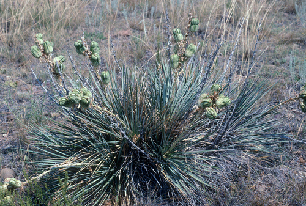
Soapweed YuccaYucca glauca Jim Morefield, some rights reserved (CC BY)") Spike TrisetumKoeleria spicata
Spike TrisetumKoeleria spicata Matt Lavin, some rights reserved (CC BY-SA)") Sprengel's SedgeCarex sprengelii
Sprengel's SedgeCarex sprengelii Square-stem MonkeyflowerMimulus ringensSticky GoldenrodSolidago glutinosa
Square-stem MonkeyflowerMimulus ringensSticky GoldenrodSolidago glutinosa Sweet-scented BedstrawGalium triflorum
Sweet-scented BedstrawGalium triflorum aarongunnar, some rights reserved (CC BY), uploaded by aarongunnar") SweetgrassAnthoxanthum hirtum
SweetgrassAnthoxanthum hirtum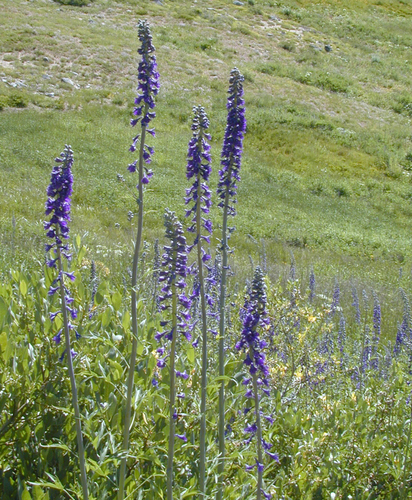
Tall LarkspurDelphinium glaucum Mary Krieger, some rights reserved (CC BY), uploaded by Mary Krieger") Tall Meadow RueThalictrum dasycarpumTufted HairgrassDeschampsia cespitosa subsp. cespitosa
Tall Meadow RueThalictrum dasycarpumTufted HairgrassDeschampsia cespitosa subsp. cespitosa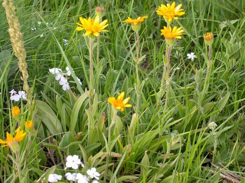
Twin ArnicaArnica sororiaUmbrella BuckwheatEriogonum umbellatum Nick Block, some rights reserved (CC BY), uploaded by Nick Block") Western Blue IrisIris missouriensis
Western Blue IrisIris missouriensis Dean Wm. Taylor, some rights reserved (CC BY)") Western FescueFestuca occidentalis
Western FescueFestuca occidentalis Martin Purdy, some rights reserved (CC BY), uploaded by Martin Purdy") Western Meadow AsterSymphyotrichum campestre
Western Meadow AsterSymphyotrichum campestre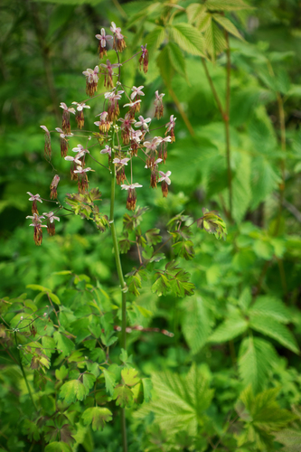
Western MeadowrueThalictrum occidentaleWestern Porcupine GrassHesperostipa curtiseta marlin harms, some rights reserved (CC BY)") White CamasAnticlea elegansWhite Evening PrimroseOenothera nuttallii
White CamasAnticlea elegansWhite Evening PrimroseOenothera nuttallii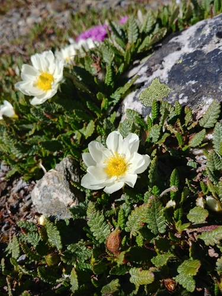
White Mountain AvensDryas hookeriana Michael J. Papay, some rights reserved (CC BY), uploaded by Michael J. Papay") Willow AsterSymphyotrichum lanceolatum
Willow AsterSymphyotrichum lanceolatum WinterfatKrascheninnikovia lanata
WinterfatKrascheninnikovia lanata Woolly CinquefoilPotentilla hippiana
Woolly CinquefoilPotentilla hippiana J Brew, some rights reserved (CC BY-SA), uploaded by J Brew") Yellow BeardtonguePenstemon confertus
Yellow BeardtonguePenstemon confertus Yellow BuckwheatEriogonum flavum
Yellow BuckwheatEriogonum flavum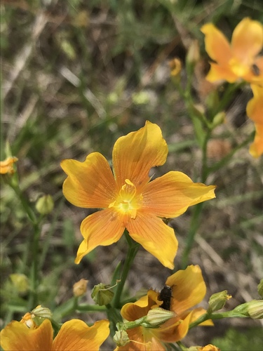
Yellow FlaxLinum rigidum Yellow Lady's SlipperCypripedium parviflorum
Yellow Lady's SlipperCypripedium parviflorum Matt Berger, some rights reserved (CC BY), uploaded by Matt Berger") Yellow Monkey FlowerErythranthe guttata
Yellow Monkey FlowerErythranthe guttata Matt Lavin, some rights reserved (CC BY-SA)") Yellow Owl CloverOrthocarpus luteusYellow PaintbrushCastilleja lutescens
Yellow Owl CloverOrthocarpus luteusYellow PaintbrushCastilleja lutescens gonodactylus, some rights reserved (CC BY), uploaded by gonodactylus") Yellow Pond-lilyNuphar variegata
Yellow Pond-lilyNuphar variegata Matt Lavin, some rights reserved (CC BY-SA)") YellowbellsFritillaria pudicaYellowstone DrabaDraba incerta
YellowbellsFritillaria pudicaYellowstone DrabaDraba incerta